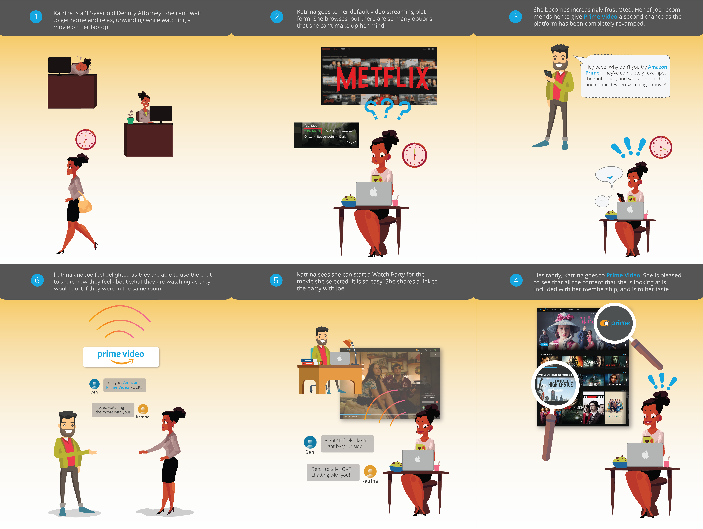
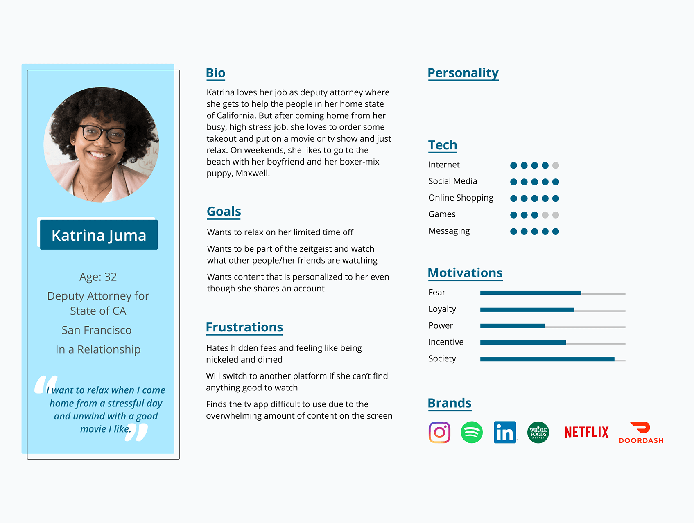
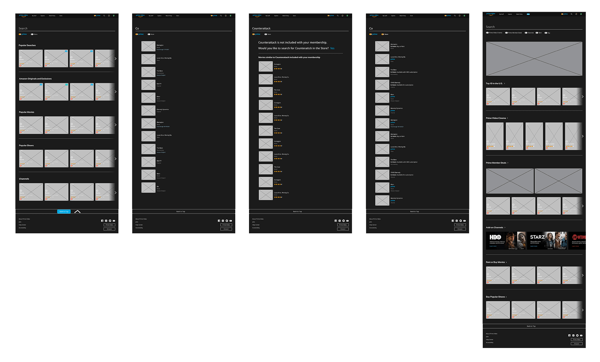

Prime Video - Redesigning the streaming platform
Our aim was to enhance the user experience and value proposition of an existing video streaming platform on desktop. We chose to focus on adding personalization as well as a social component to Amazon Prime Video (Prime Video). To accomplish these goals, we conducted user research, a heuristics evaluation, and usability testing. As a result, we redesigned Prime Video’s IA and UI, and designed novel social integrations.
My Role:
Skills:
Lead user research and interviews, conducted case study of Amazon Prime’s existing UI guide, collaborated on prototyping and user testing.
Project Management, UX/ Research, Wire Frames, Hi-Fi Mocks, Prototyping
Project Team
Project Duration
Adriana, Deepa 🙋 , Hattie, Sonja, Lydia
4 weeks
Audience
Proto Persona
We started this project with an assumption, which we compiled in our proto-persona: in times of social isolation and beyond, Prime Video users lack personalization and integrated tools to socialize and connect with others through this platform.

Research
User Research
To test our assumption, we performed 5 interviews with a demographic of active Prime Video users aged 22–38 and posted an Instagram poll. Our team found the need to focus on solving major IA and UI issues as well as address interest in the integration of a social component.
Main Findings:
- Prime Video’s poor and cramped UI prevents users from using the platform more often
- Users value ratings and friend’s recommendations when deciding what to watch
- Features like profiles, continue watching, and recommendations based on watching history are valued by users
- Existing browse and search features lead to irrelevant results and cause user frustration
Heuristic Analysis
We conducted a page-by-page analysis of Prime Video’s UI to identify specific usability issues. We focused on the main pages that users would use most frequently including homepage, show/movie detail page, search, and store. In addition, we analyzed the Watch Party page which was a major desirable component according to user interviews.

Main Findings:
- The Prime Video site lives within the larger Amazon Prime marketplace, which results in several usability issues
- Prime Video is error-prone when users are trying to find free content only
- Lack of consistency in the terminology used on cards and navigation
- Accelerators aimed to offer users flexibility and efficiency of use are not existent or not optimized for a video streaming service
User Goals
User Persona
With a better understanding of the behavioral and cognitive processes of potential users, we created a persona, which was the focus of our competitive analysis and the guiding force of ideation and prototyping.
To further determine the scope of the problem, we created a user scenario that added specific constraints to the persona’s situation and goals. This scenario was part of a larger customer journey map that identified feelings, pain points, and opportunities.
We also put together a storyboard to showcase our value proposition


Problem Definition
\How might we help users feel familiar with Prime Video as well as delighted to use the platform so Prime Video becomes their default video streaming platform?
Competitive Analysis
To ideate solutions that would help the user achieve her goals, we performed a competitive analysis to figure out if/how other products were addressing the user needs. We evaluated 3 direct competitors (Hulu, Netflix and Disney+) and 1 indirect competitor (YouTube)
Competitor's Strengths
- Welcoming homepage with personalized suggestions and profiles
- Carousels with visual rhythm
- Progress bars for live content
- Objective content recommendations based on users' watch history
- Display of trending searches and popular content
- Use of alphabetical order to categorize genres
Competitor's weaknesses
- By default, the sound is turned on when trailers autoplay
- Need to pay extra to avoid advertisement
- Lack of progress indicator on horizontal carousel scrolling
- Lack of connectivity to social accounts (except YouTube)
- Not all of them offer access to content that is not included with membership
Information Architecture
Since one of the site’s main usability issues was the display of irrelevant information, we decided to conduct a card sorting exercise to redefine the site’s information architecture.
Design Ideation
"I like, I wish, what if" method and prioritization
We used the "I like, I wish, What if" method to ideate, followed by a prioritization matrix to identify what ideas could potentially become features based on impact to users and priority to the company.
Goals
Redesign Goals
Based on those activities, our team defined these project redesign goals:
- Detach Prime Video from broad Amazon Prime Marketplace for a clean and consistent UI and streamlined user experience
- Allow integration of social accounts to Prime Video and improve the Watch Party experience to help users connect with each other
- Add personalization with profiles, relevant suggested content, and suggested content from social media contacts
- Give users an easy mechanism to distinguish free from paid content (store and subscription channels)
- Create a dedicated Prime video searching feature that integrates with the store to guarantee that users find what they need
- Replace Amazon marketplace movie ratings with Imdb rating to which Amazon has the rights to
User Flow Diagrams
Given our ambitious goals, we created several users flows to visualize the following processes:
- Login and connect to social accounts
- Browse content on homepage
- Search content
- Explore the Store
- Create and start a Watch Party
Sketches & Lo-Fi Wireframes
Our team created low fidelity wireframes to facilitate collaboration, feedback, and design decisions
We sketched a homepage to ideate this page's information architecture and rhythm. Likewise, this sketch above served to conceive iconography and interactions

Our Focus
- Create layout consistency across pages with a similar purpose
- Figure out what information to display on the show/movie cards
- Redesigning the grid by introducing vertical elements and full span hero images to break up the monotonous grid arrangement
Style Tile
I lead the process of redefining our UI redesign adjectives and visual style, which I then consolidated on a style tile. I made sure to reference Amazon Prime’s UI Style Guide, so as to not deviate/ make the user feel disoriented while navigating the redesigned Prime Video website.
Hi-Fi Wireframes
Redesign comparison

UI Component Library
The Approach
Our team’s UI component library was built on Figma, which secured uniformity, facilitated page assembly, and allowed us to make changes across the entire file with ease
- Create atom elements: Define text and color Figma styles, Select and convert icons into components
- Create simple to more complex nested components
- Consistently name components to exchange instances on the property panel efficiently
Usability Testing & Iteration
Usability Testing: Round 1
With the goal to test our existent flows and visual design, we conducted 5 usability tests.
User Tasks:
- Log in and connect to Facebook
- Browse the hompage and use Prime Toggle
- Search for a specific movie
- Create a WatchParty and chat with friends
What worked Well
- Intuitive navigation structure
- Introduction of profiles and recommendations based on Facebook friends' watch history
- Watch Party feature
- Nonmonotonic page layouts with a limited number of carousels
- Giving users control over content with Prime toggle
- Provide users with visibility of system status (i.e. visual progress cues on cards and carousels)
What needs improvement
- Bewildering social account connection screens
- Confusing search flow step
- Hard to use the vertical menu on cards
- Hard to discover the search field across pages
- Once the Watch Party starts, users lack a way to see participants
Iteration
Based on users' feedback, we iterated on our card design, social connection screens, Watch Party features, homepage layout, and search flow
Usability Testing: Round 2
We performed a second round of usability testing to further refine our hi-fi prototype and check if we addressed issues brought up on our first round. We asked 4 new users to complete the same tasks from our first usability test
Remaining issues:
- Users were still confused about the social account screens; however, after looking at the homepage they understood what it meant to connect Prime Video to social account
- Confusing host controls tab design for Watch Party
- Hard to see where expanded cards end and background begins
High-Fidelity Prototype
We fixed the minor UI and visual design issues discovered through usability testing and spent most of our time ideating a better way to convey the value of integrating Prime Video with social accounts since this was such a critical piece of our value proposition

Next Steps
In times of social isolation, this was a very insightful project to work on- taking time to unwind and connect with close friends, family, and others in the community is more important than ever to maintain wellbeing and relieve stress. This was why we decided to incorporate a social media component to the existing Amazon Prime Video platform.

-
Test revised hi-fi prototype
Get feedback on the social account connection screen, and look closely at search and store filters to identify opportunities to optimize these accelerators. -
Integration of Filters
Explore the integration of filters directly on the homepage to further personalize users’ experience and suggest content based specific needs (i.e. language, subtitles, content duration, and rating/advisory). -
Reinforce Social Media component
Continue to explore ways to leverage Prime Video’s integration to social accounts while protecting users privacy and giving them total control over what they share and whom they share it with.